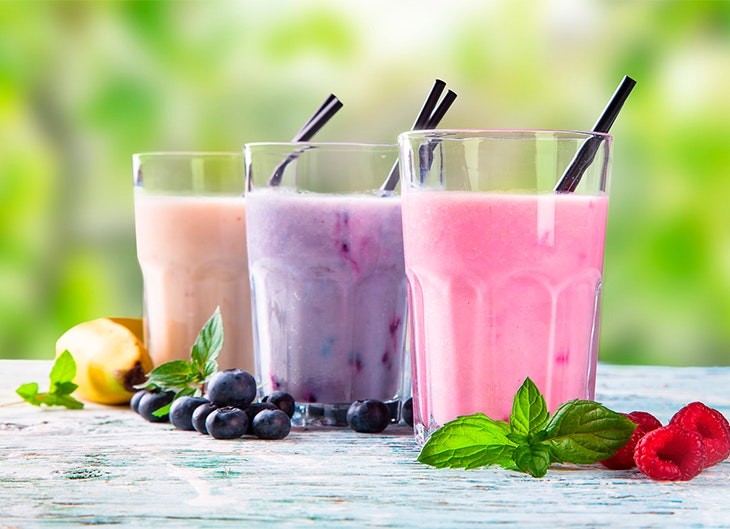

Experiencias del Cliente
¿Cómo disfrutar tu primera visita a KOKO.?
Tu primera visita, una experiencia que despierta todos los sentidos.
Leer más...
Las bebidas favoritas de nuestros clientes
Sabores que enamoran, burbujas que te hacen sonreír.
Leer más...
Momentos perfectos para compartir un Bubble Tea
Comparte risas, momentos y burbujas de felicidad.
Leer más...
Nueva sensación y combinación del Mochi
Dulce, suave y única — la magia del mochi en cada bocado.
Leer más...Innovación y Cultura
La evolución del Bubble Tea en Costa Rica
De Asia al corazón de Costa Rica, reinventando la manera de disfrutar el té.
Leer más...
Sabores internacionales que inspiran nuestras bebidas
Un viaje de sabor entre culturas, en cada vaso KOKO.
Leer más...
Salud y Bienestar
Batidos saludables: pequeños hábitos, grandes cambios

Natural, fresco y real: bienestar servido con sabor.
Leer más...